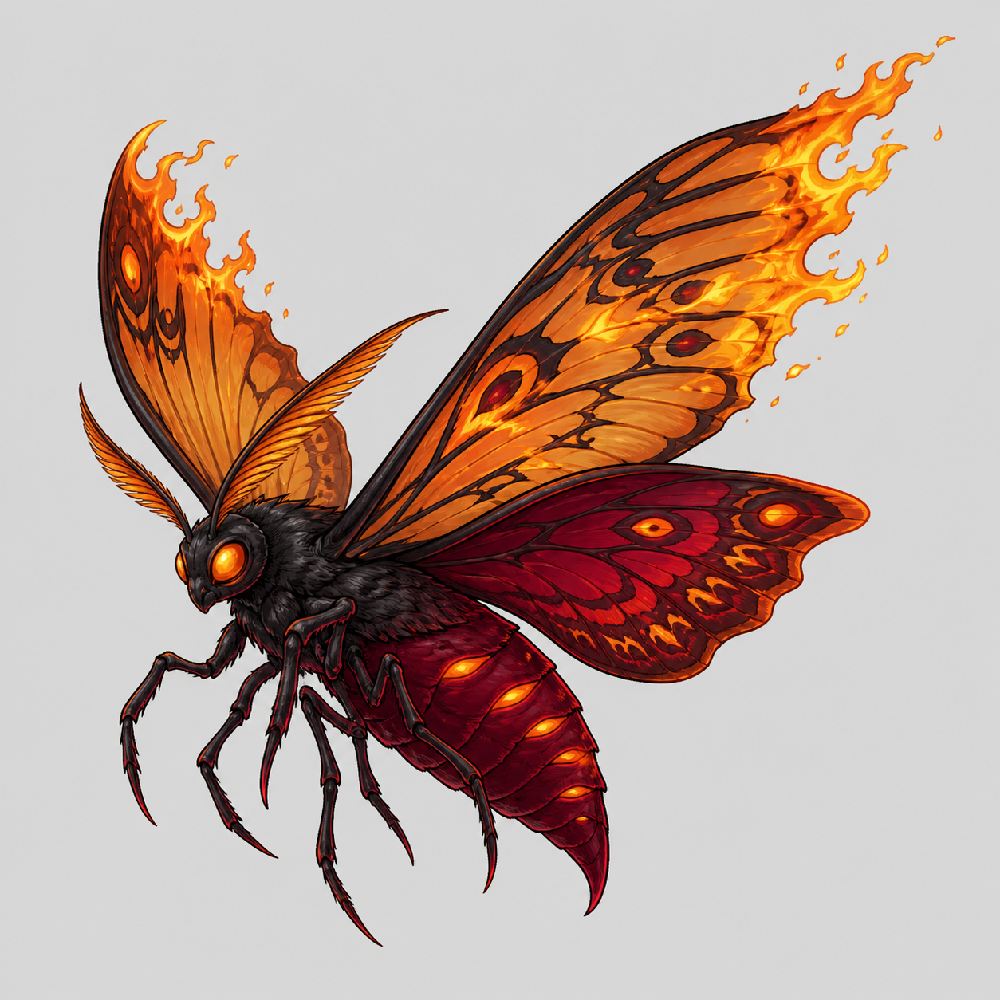
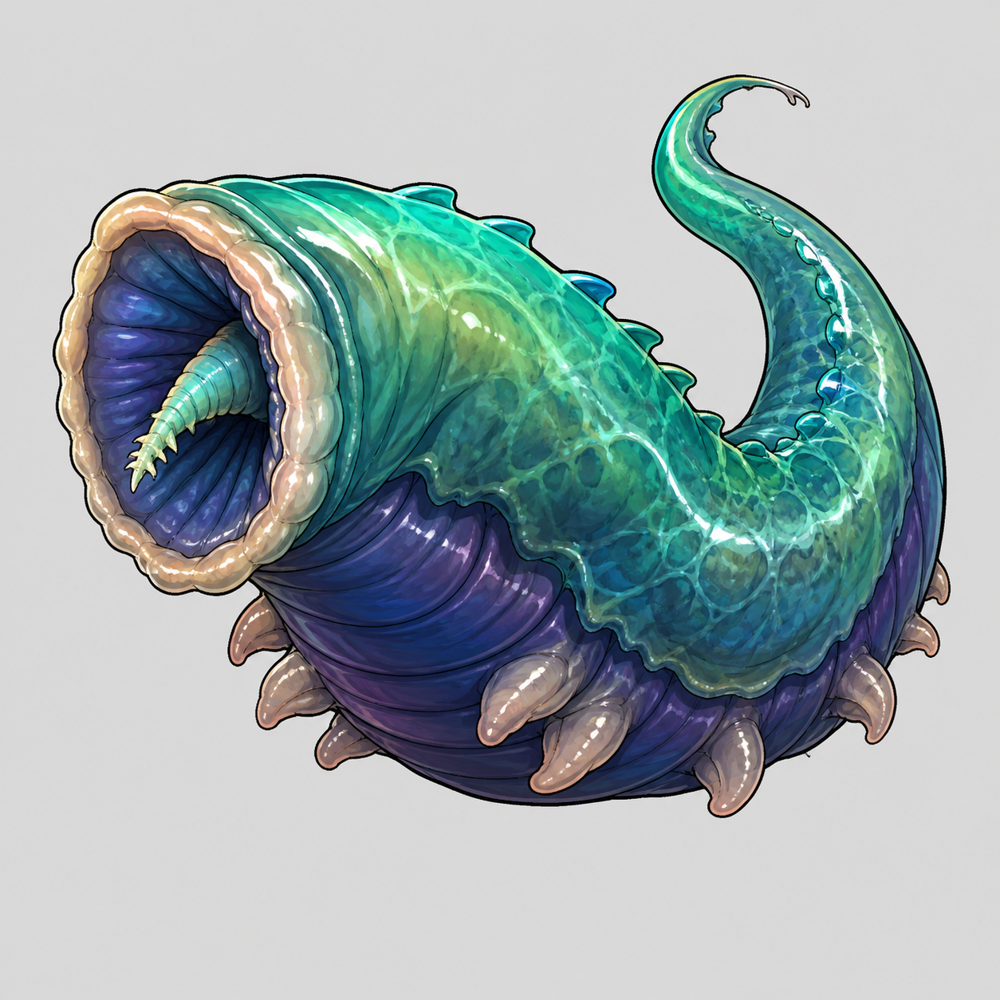
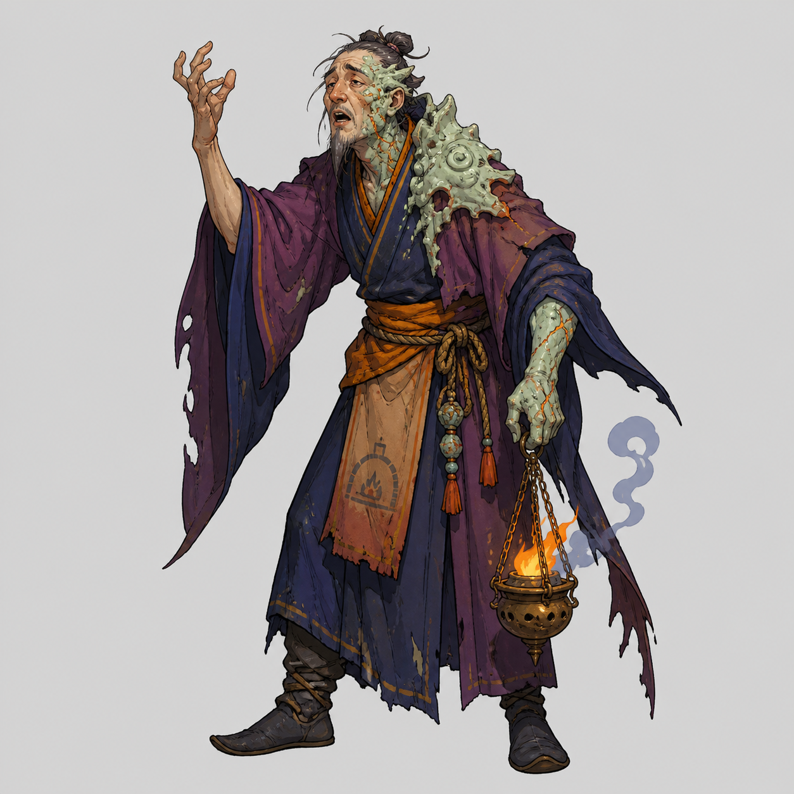
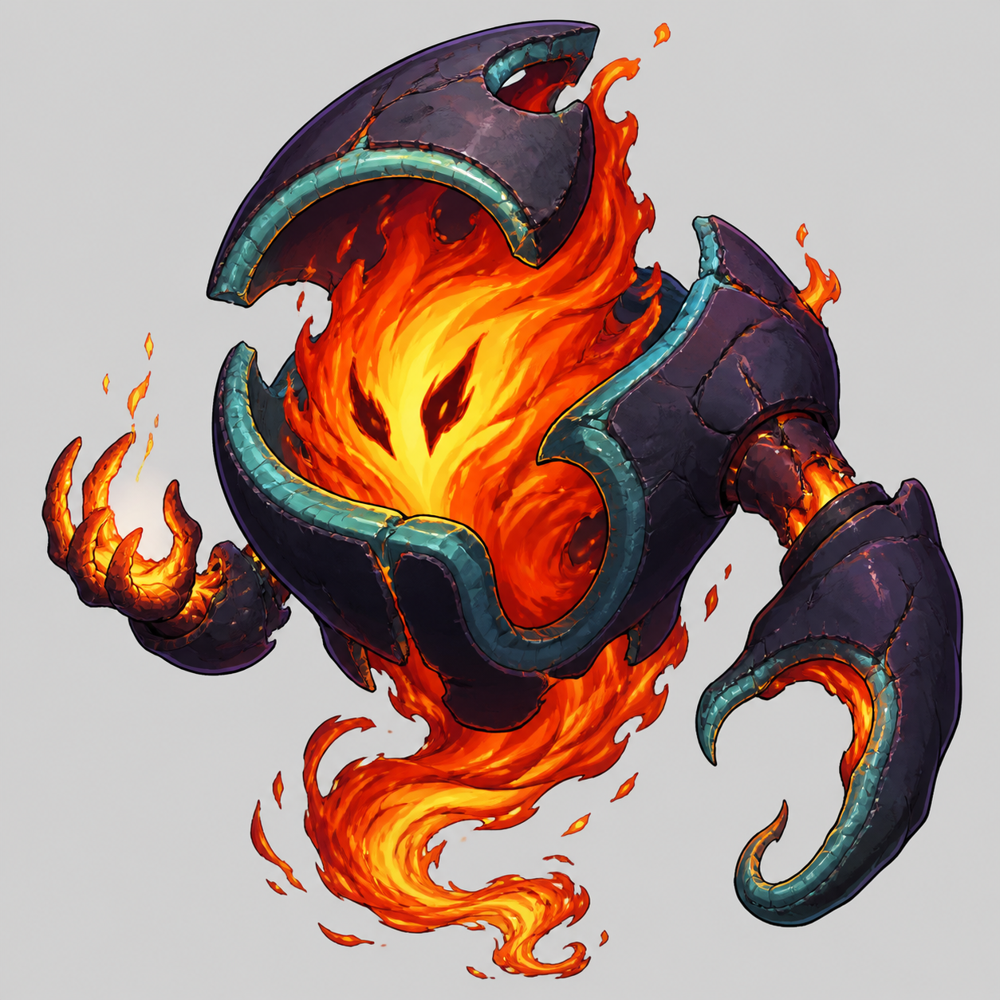

2026.08.27 · 新方向样张 / 尚未批准
怪物有自己的视觉语言
不复制玩家色板 · 允许火焰和鲜明色彩 · 通过物种与材质区分
先审批这四张的方向、配色和火焰尺度，再扩展剩余怪物。它们是浅灰底概念稿，不是透明生产素材；细节密度和游戏小图效果仍需后续收敛、验证。现役图片一张未替换。
全量复评：6 张保留造型、6 张局部优化、8 张重制造型或画法。保留造型不代表技术文件合格，原图残留背景/水印仍需修复。火蛾本身不因橙色与火焰判失败；下方是方向试样。

样张 01 / 待审批
火蛾
橙金火翼 × 酒红虫身
保留自然蛾翼与昆虫身体，用翼缘火舌做识别点，不再画成灰色陶片。
查看大图展开现役原图对照

现役原图保留未改。造型和技术问题分别评估。

样张 02 / 待审批
釉蛭
翡翠青绿 × 蓝紫软体
吸口和柔软身体体现寄生虫；釉液可有色彩与光泽，不是机械虫。
查看大图展开现役原图对照

现役原图保留未改。造型和技术问题分别评估。

样张 03 / 待审批
灰颂者
紫蓝衣袍 × 局部陶化 × 炭盆火
以人形颂唱、工装与部分陶化表达身份；不使用骷髅，也不照搬玩家服装配色。
查看大图展开现役原图对照

现役原图保留未改。造型和技术问题分别评估。

样张 04 / 待审批
窑心·烬
青釉外壳 × 熔焰核心
火焰成为窑心主体身份，外壳与火焰形成对比，不是统一灰甲骑士。
查看大图展开现役原图对照

现役原图保留未改。造型和技术问题分别评估。